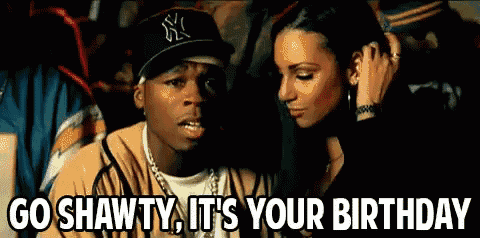

Happy Birthday Baby!

On this fateful day of springtime celebration...
Once upon a time, in a land where rent was too high and coffee was considered a love language, there lived a brave, wise, and slightly creaky man known as Sir Birthday. He was turning 34—a number so high it echoed when you said it aloud. Thirty-foooourrrr...
To celebrate his 34th rotation around the sun, Lady Chaos threw a party themed “Ancient Relics and Retro Boyfriends.” Everyone had to wear cardigans and bring an item older than Sir Birthday himself (someone brought a VHS tape, and it spontaneously combusted).
As a surprise, she baked a cake shaped like a dinosaur holding a tiny walker. The banner read:
🎉 “Level 34 Unlocked – You Can Now Complain About Back Pain Without Shame!” 🎉
Sir Birthday, touched by the love (and slightly winded from blowing out the candles), declared:
"Age is just a number… until your knees start making that crunchy sound when you squat."
They laughed, they danced to ‘90s hits he claimed were “still bangers,” and they ended the night watching a documentary that he fell asleep halfway through—because being adorable and old is exhausting.
And so, Sir Birthday and Lady Chaos lived happily ever after—one dad joke and age-related roast at a time. 💖
The end.
(or as he says, "To be continued... after a nap.") 😌🎂
🎈✨Party Vibes: Fossils & Fun Edition✨🎈
🎉 Theme:
"Vintage and Still Kickin’"
Guests must arrive dressed as either:
- Something older than Sir Boyfriend (a VHS tape, a rotary phone, or a dinosaur costumelandlines, emotional baggage)
- Something that makes you feel ancient (like a flip phone or a landline)
🍕 Food & Drinks Table – "Ancient Grains and Chaotic Gains"
- Pizza slices with topping labels like “Arthritis Special” and “Crisis of Cheese”
- Dinosaur chicken nuggets (because nothing says maturity like Jurassic poultry)
- Mac 'n' Cheese of Wisdom
- Cup o’ Noodles Station – for that nostalgic “we’re still broke” flavor
- Fruit Platter for the Old at Heart (also: it balances the pizza)
- "Youth Elixir" Punch – spiked, unspiked, and probably cursed versions available
- Boba bar (because yes, he’s still cool, he just complains more now)
- Mini cake pops labeled "His Remaining Brain Cells"
🎂 The Cake:
A glorious two-tier cake shaped like a Game Boy… but the screen reads:
“LOW BATTERY – 34% REMAINING”
Candles spell: “HELP”
Sparklers optional. Fire extinguisher mandatory.
🎶 Playlist – Titled “Certified Bangers for the Chronically Aging Emo"
- Basically every song by 3OH!3
- "My girl" by The Temptations
- "Red Light Kisser" by Your Broken Hero & New Found Glory
- "Hey Ya! by Outkast
- "Mr. Brightside" because it’s legally required
- Lo-fi remixes of video game theme songs
- Some smooth jazz, to confuse people
- Random TikTok songs he pretends not to know
- And last but not least, some ghetto music for the girlfriend
🎲 Party Activities:
- “Guess That Obsolete Tech” – Winner gets a Tamagotchi and a gentle existential crisis
- Back Pain Limbo – How low can you go... without regretting it for three days?
- Pin the Grey Hair on the Boyfriend – Self-explanatory. Hilarious.
- Nap Zone™ – Comfy corner with bean bags, warm blankets, and a sign:
“Napping is not quitting. Napping is strategic.”
🏆 Awards Ceremony (hosted by Terri, obviously):
- “Most Likely to Wake Up Sore for No Reason”
- “Best Use of Dad Jokes Under Pressure”
- “Hotter Than He Was in His 20s” (💅)
- “Still Calls People a Retard and That’s Okay”
"Place offerings to the 34-Year-Old Ancient One here. He accepts chocolate, flattery, and Venmo."
🎁 Also:
- Anti-Aging Cream for the Soul – Because the only wrinkles we accept are in his jokes.
- A Year’s Supply of Dad Jokes – He’s earned the right to peak cringe.
- Custom Walker with Cup Holder – For his emotional support iced coffee.
- One (1) New Joint – Preferably a knee or a hip. We'll even take refurbished.
- Noise-Canceling Headphones – So he can ignore the chaos he pretends not to hear.
- An Embroidered Blanket That Says "World’s Okayest Grown-Up" – For maximum nap excellence.
- A Calendar with Weekly Reminders That He’s Still Hot – Gotta keep the ego moisturized.
- Vitamins Shaped Like Gummy Dinosaurs – Because if he’s going to age, he’s gonna do it deliciously.
- A Framed Photo of the First iPod – So he can weep silently and whisper, “She was beautiful…”
- An Hourglass Timer That Screams "YOU'RE RUNNING OUT OF TIME" – Just for vibes.
- A Trophy for “Best Boyfriend Who Was Born in the Previous Century” – Participation award? Heck no. Legend status.
- A Certificate That Officially Declares: “Still Younger Than Gandalf” – By a little. But still counts.
- One Month of Free Back Rubs from His Younger, Funnier, Superior Partner (That’s Me) – But only if he doesn’t groan like a haunted door every time.
- A Time Machine – So he can go back and stop himself from ever saying “Yeet.”
- An Emergency Kit with Tums, Eye Drops, and a “Don’t Talk to Me Until My Second Nap” Sign – Just the essentials.
- An Apartment With No Additional Bullshit Fee added that He can Rent So He can spend time with his girlfriend in Japan.
Don't forget to grab your ancient flip phones and crocs, as we are throwing the MOST EPIC BIRTHDAY PARTY in...
Upper Buttles (Wisconsin, USA)!!!